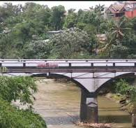
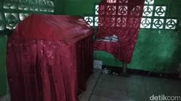
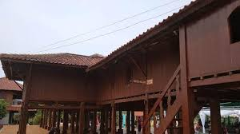
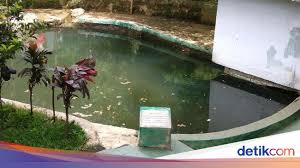

Cagar Budaya Kota Depok
1.Rumah Tua Pondok Cina

sumber:wikipedia.com
Rumah Tua Pondok Cina adalah sebuah bangunan
bersejarah yang terletak di Jalan Margonda
yang merupakan pusat kota Depok.Bangunan Ini dibangun pada abad ke 19
bangunan tersebut merupakan saksi bisu perjalanan waktu
dan perubahan
yang terjadi di sekitarnya
2.Jembatan Panus
sumber:megapolitan.com
Jembatan yang sudah ada sejak awal 1900-an
Jembatan Panus dibangun pada tahun 1917 oleh insinyur bernama
Andre Laurens. Sebutan Jembatan Panus sendiri berasal
dari warga Depok bernama Stevanus Leander yang pernah
tinggal di dekat jembatan ini.
3.Makam Mbah Raden Wujud Beji
sumber:detiknews.com
Mbah Raden Wujud Beji adalah seorang penyiar agama
di Kota Depok di zaman penjajahan Belanda.
Tak ada catatan akurat mengenai kisah hidupnya.
Namun di TPU Keramat Beji, berdiri bangunan menyerupai
rumah yang merupakan makam Mbah Raden Wujud Beji.
4.Rumah Pitung
sumber:wartakota wiki.com
Rumah Pitung, merupakan peninggalan bersejarah
yang terletak di kawasan perbelanjaan Margo City,
Rumah ini memiliki sejarah yang kaya, dengan klaim bahwa itu adalah
tempat singgah dari tokoh legendaris, Pitung, yang dikenal sebagai
jawara dan pahlawan Betawi.
5.Sumur Keramat 1-7
sumber:detiknews.com
Di Depok sendiri terdapat beberapa
lokasi sumur yang dianggap sangat bersejarah,
berikut lokasi Sumur 7 Mbah Raden Wujud Beji:
-Sumur ke 1 di Jalan Kopo Beji Depok
-Sumur ke 2 di belakang Masjid Hidayatullah RT 5 RW 1 Beji Depok
-Sumur ke 3 di Jalan Pulo Jaya Sumur ke 4 di sebelah TPU Keramat Beji
-Sumur ke 5, 6, dan 7 di dalam kompleks Masjid Nurussalam